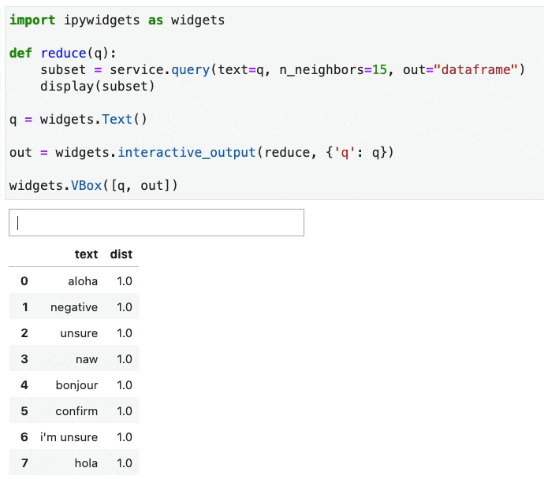

Cool Tricks
This document explores some cool/useful tricks you can pull off with this library.
Benchmarking¶
Before diving into benchmarking, we should be acknowledge that coming up with meaningful benchmarks is hard. The goal of this document is to inspire folks to think about benchmarking, not to suggest that this page highlights a state of the art result.
Having said that ... let's say that you're interested in building a retreival service and you happen to have a dataset that's labelled. In that case you may be able to calculate precision-at-k and recall-at-k (wiki). The examples/benchmark.ipynb file on the GitHub repository shows a full example using the clinc-dataset.
The benchmark compares two encoders. One is fairly basic and only tracks word-tokens while the other includes subword embeddings and countvectors.
# Original Encoder Pipeline
encoder = make_pipeline(
ColumnLister('text'),
CountVectorizer()
)
# New Encoder Pipeline
encoder = make_pipeline(
ColumnLister('text'),
make_union(
CountVectorizer(),
CountVectorizer(analyzer="char", ngram_range=(2, 3)),
BytePairLanguage("en", vs=1_000),
BytePairLanguage("en", vs=100_000),
)
)
The results from the comparison are summarised in the chart below. Feel free to click/drag/hover/zoom. You can double-click to reset the view.
Again, we don't want to suggest that the encoders that we used are state of the art, but we do hope the notebook offers a convenient starting point for folks to start benchmarking experiments.
Interactive Widgets¶
For extra interactivity you may be interested in using simsity with
interactive jupyter widgets. To use these, you'll want to double
check that you're using a modern jupyterlab installation and that
the ipywidgets library is installed.
pip install ipywidgets
jupyter nbextension enable --py widgetsnbextension
You can now re-use a service as an interactive widget.
import ipywidgets as widgets
def reduce(q):
subset = service.query(text=q, n_neighbors=15, out="dataframe")
display(subset)
q = widgets.Text()
out = widgets.interactive_output(reduce, {'q': q})
widgets.VBox([q, out])
Here's what the experience is like:

If you're unfamiliar with the widgets and appreciate a course we recommend checking this calmcode.io course.
You could even extend the widget to allow for a comparison between two services.
import ipywidgets as widgets
def reduce1(q):
subset1 = service1.query(text=q, n_neighbors=5, out="dataframe")
display(subset1)
def reduce2(q):
subset2 = service2.query(text=q, n_neighbors=5, out="dataframe")
display(subset2)
q = widgets.Text()
out1 = widgets.interactive_output(reduce1, {'q': q})
out2 = widgets.interactive_output(reduce2, {'q': q})
widgets.VBox([q, widgets.HBox([out1, out2])])
Labelling Aid¶
Suppose you've started working on a deduplication use-case. Then odds are that you don't have a ground truth of labels just yet. So how might simsity help out in such a use-case?
If you're looking for a simple way to label inside of a jupyter notebook you can use pigeon. There's a course here if you're unfamiliar. Make sure it's installed beforehand via:
pip install pigeon-jupyter
Let's demonstrate how you can use a service here.
import pandas as pd
from simsity.service import Service
from simsity.datasets import fetch_voters
from simsity.indexer import PyNNDescentIndexer
# Don't forget to pip install dirty_cat
from dirty_cat import GapEncoder
df = fetch_voters()
encoder = GapEncoder()
service = Service(
indexer=PyNNDescentIndexer(metric="euclidean"),
encoder=encoder
)
service.train_from_dataf(df)
Given that we have a service that can find similar items. We now need a function that can generate candidates that may be similar.
import random
def generate_pair(service, n_consider=10):
idx = random.randint(0, len(service.storage) - 1)
query = service.storage[idx]
df_out = service.query(**query, n_neighbors=n_consider, out='dataframe')
return df_out.drop(columns='dist').sample(2)
generate_pair(service)
This function will generate a dataframe that contains a pair of potentially similar items. This function can be used in a pigeon loop for labelling.
from IPython.display import display
from pigeon import annotate
annotations = annotate(
(generate_pair(service, n_consider=3) for x in range(200)),
options=['similar', 'not similar'],
display_fn=display
)
Here's what the experience is like.

Machine Learning¶
After generating annotations you can inspect them. Here's a
helper function that can give an overview of the labels.
def annot_to_dataf(annotations):
data = []
for a in annotations:
d1, d2 = a[0].to_dict(orient='records')
d1 = {f'{k}_1': v for k, v in d1.items()}
d2 = {f'{k}_2': v for k, v in d2.items()}
data.append({**d1, **d2, 'label': a[1]})
return pd.DataFrame(data)
annot_to_dataf(annotations)
Here's an example of what you might see.
| name_1 | suburb_1 | postcode_1 | name_2 | suburb_2 | postcode_2 | label |
|---|---|---|---|---|---|---|
| jamara bigger | gastonia | 28054 | jeffrey cox | flexer | 28702 | not similar |
| ashlee kreer | hickry | 28601 | frank lea | new bern | 28562 | not similar |
| perry kirksey | leland | 28451 | james skipper | rocky point | 28457 | not similar |
| jimmy penny | pittsboro | 27312 | audrey noel | greensboro | 27405 | not similar |
| terri foster | yanceyville | 27379 | ter5i foster | yankeyville | 27379 | similar |
Given these labels, you can now try to train a model that can detect if two rows are "similar". We can re-use the encoders that we used before.
def annot_to_X_y(annotations, encoder):
data1 = []
data2 = []
ys = []
for a in annotations:
d1, d2 = a[0].to_dict(orient='records')
data1.append(d1)
data2.append(d2)
ys.append(a[1])
X1 = encoder.transform(pd.DataFrame(data1))
X2 = encoder.transform(pd.DataFrame(data2))
return X1, X2, ys
X1, X2, y = annot_to_X_y(annotations, encoder)
The X1 and X2 arrays resemble the encodings of the rows that we
labelled before. We could take the difference between these two rows
and leave it to a machine learning algorithm to figure out which
items in the array matter when it comes to "being similar".
import numpy as np
from sklearn.linear_model import LogisticRegression
X_difference = X1 - X2
model = LogisticRegression().fit(X_difference, y)
pred = model.predict(X_difference)
# This is the train performance
np.mean(pred == y)
The more data you collect, the better this model may become. Once
you're satisfied with the performance you can use the original service
to find items that are "close" and you can use this model to
pluck out the candidates that matter. The goal is to save the annotator
some time while doing this.